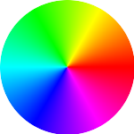
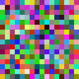

Creating Bold Text
This is a quick and dirty approach. The best technique is really to find a bold font and specify that using -font
|
Normal Weight Text convert -background white -font Arial -pointsize 48 label:"Test" text.jpg
|
|
Bold Text (add -stroke black) convert -background white -font Arial -pointsize 48 -stroke black label:"Test" textbold.jpg
|
Aligning Text Vertically
|
convert -background white -fill blue -font Arial -pointsize 24 -gravity center \
|
Rainbow And Step Gradients
|
Cyclic Color Rainbow
convert -size 30x600 xc:"rgb(100%,0%,0%)" -colorspace hsl gradient: \
|
|
Non-Cyclic Color Rainbow
convert xc:black xc:red xc:orange xc:yellow xc:green1 xc:cyan xc:blue xc:blueviolet xc:black \
|
|
10 Step Red, Blue, Green And Gray Gradient
convert -size 1x10 gradient:red-black gradient:green1-black gradient:blue-black gradient: \
|
|
Circular Color Rainbow
convert \( -size 151x151 xc:"rgb(100%,0%,0%)" -colorspace hsl \) \  |
Random Color Squares Image
|
convert -size 16x16 xc: +noise Random -scale 1000% random_squares.gif  |
Convert Colors To RGB(A) Values In Range 0 to 255
|
IM Commands Only
color="some_color_value" color="red" => (255,0,0) color="skyblue" => (135,206,235) color="#fe9843" => (254,152,67) color="rgb(75%,50%,25%)" => (191,127,63) color="hsl(180,100%,50%)" => (0,255,255) color="cmyk(100%,100%,0%,50%)" => (0,0,127) color="rgba(100%,75%,50%,0.25)" => (255,191,127,63) color="hsla(180,100%,50%,0.5)" => (0,255,255,127) color="cmyka(100%,100%,0%,50%,0.25)" => (0,0,127,63) color="#fe9843ca" => (254,152,67,202) color="gray75" => (191,191,191) color="graya(50%,0.25)" => (127,127,127,63) |
|
IM & Sed Commands
color="some_color_value" color="red" => (255,0,0) color="skyblue" => (135,206,235) color="#fe9843" => (254,152,67) color="rgb(75%,50%,25%)" => (191,127,63) color="hsl(180,100%,50%)" => (0,255,255) color="cmyk(100%,100%,0%,50%)" => (0,0,127) color="rgba(100%,75%,50%,0.25)" => (255,191,127,64) color="hsla(180,100%,50%,0.5)" => (0,255,255,128) color="cmyka(100%,100%,0%,50%,0.25)" => (0,0,127,64) color="#fe9843ca" => (254,152,67,202) color="gray75" => (191,191,191) color="graya(50%,0.25)" => (127,127,127,64) |